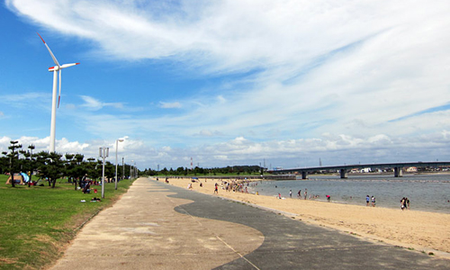
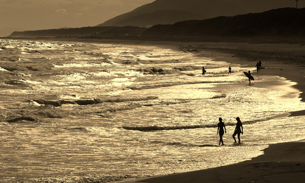
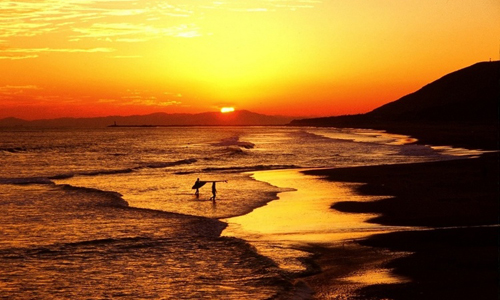
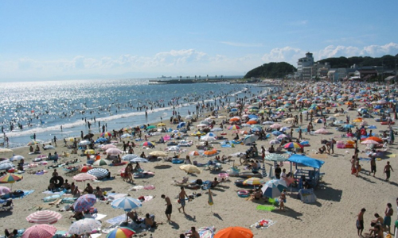

新舞子マリンパーク（しんまいこマリンパーク）とは、愛知県知多市緑浜町にある人工島の公立の公園。
一部事務組合の名古屋港管理組合が設置し、株式会社日誠が指定管理者として管理・運営をしている。


新舞子マリンパーク（しんまいこマリンパーク）とは、愛知県知多市緑浜町にある人工島の公立の公園。
一部事務組合の名古屋港管理組合が設置し、株式会社日誠が指定管理者として管理・運営をしている。

赤羽根海岸（あかばねかいがん）は、愛知県田原市にある海岸である。
太平洋ロングビーチまたは赤羽根ロングビーチという愛称で親しまれている。

日間賀島の東に位置する海水浴場で、朝日が昇る光景が遮るものがなく眺められるため、“サンライズビーチ”とも呼ばれている。
遠浅のため、小さい子供でも安心して泳げるので家族客に好評である。